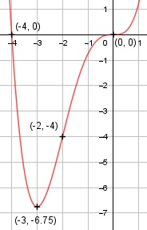

Aufgabe 54 f(x) = 0,25x4 + x3 f'(x) = x3 + 3x2, f''(x) = 3x2 + 6x, f'''(x) = 6x + 6 Definitionsbereich: -∞ < x < ∞ Wertebereich: -6,75 ≤ f(x) < ∞ (siehe Extrempunkte) Asymptoten: - Symmetrie: - Nullstellen: 0,25x4 + x3 = 0 0,25x3 * (x + 4) = 0 0,25x3 = 0 | :(0,25) x1,2,3 = 0 x + 4 = 0 | -4 x4 = - 4 N1,2,3(0|0), N4(-4|0) Schnittpunkt mit der y-Achse: f(0) = 0,25 * 04 + 03 = 0 Sy(0|0) Extrempunkte: x3 + 3x2 = 0 x2 * (x + 3) = 0 x2 = 0 x1,2 = 0, f(0) = 0 x + 3 = 0 |-3 x3 = -3, f(-3) = 0,25 * 04 + 03 = -6,75 f''(0) = 3 * 02 + 6 * 0 = 0 f''(-3) = 3 * (-3)2 + 6 * (-3) > 0 --> Tiefpunkt (-3|-6.75) Wendepunkt: 3x2 + 6x = 0 3x * (x + 2) = 0 3x = 0 |:3 x1 = 0, f(0) = 0 x + 2 = 0 |-2 x2 = - 2, f(-2) = 0,25 * (-2)4 + (-2)3 = -4 f'''(0) = 6 * 02 + 6 ≠ 0, f'(0) = 0, f''(0) = 0 --> Sattelpunkt (0|0) f'''(-2) = 6 * (-2)2 + 6 ≠ 0 --> Wendepunkt (-2|-4) Graph:
